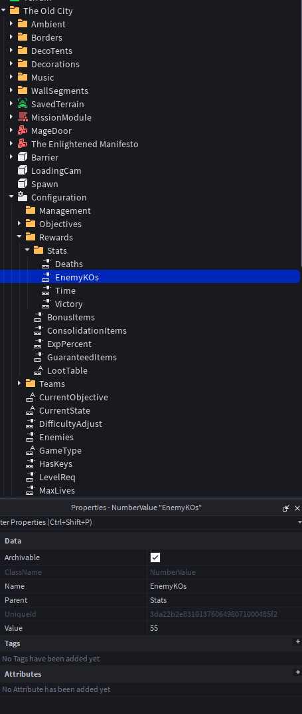
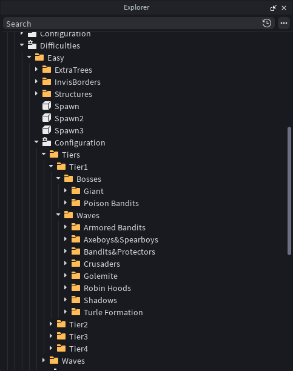
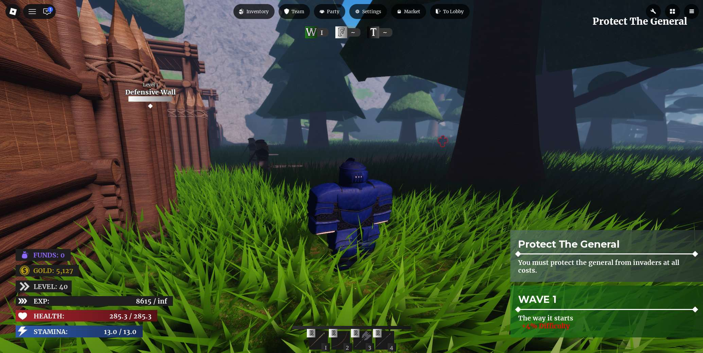

My Role
- Combat Designer/Programmer with 10+ weapon types
- AI Designer/Programmer of 15+ enemy types & behaviours
- Progression & Systems Designer/Programmer (loot economy, balancing, level scaling) with 100+ items
- Character Animations for over 20+ characters
Technical Overview
Design & Systems
Combat System
Age of Conquest's combat system is based on a risk/reward approach inspired by games such as Sekiro: Shadows Die Twice.
The player can dodge, block or parry enemy attacks while managing energy and posture.
 To balance repeated dodges, each dodge performed in succession consumes more and more energy. Additionally, the parry window becomes smaller if the ability is used multiple times within a short period.
To balance repeated dodges, each dodge performed in succession consumes more and more energy. Additionally, the parry window becomes smaller if the ability is used multiple times within a short period.
Each weapon category offers its own advantages and disadvantages in order to encourage different playstyles and dynamic combat.
Modular AI System

The game's AI is highly modular in order to serve each of the three game modes. To begin with, each enemy can have different movement behaviors:
- Defensive: Protect a specific location & return to it if aggro'd
- Offensive: Take a designated path towards a point
- Wandering: Patrol around a limited area
- Following: Follow a moving target (player or AI)
In combat, enemies use a shared State Machine across all game entities in order to read the state and distance of their opponents (player or AI) and form a combat strategy.
This system also allows the modification of a large amount of parameters:
- Movement & Attack Speed
- Aggressiveness
- Attack & Aggro range
- Field of View (and if sight is required to aggro)
- Resistances/Defense
- Target type (player, AI, structure or all)
- Attack behaviour in groups
- Status Effect immunities & inflictions
- Etc.
 Excerpt of the behavioral and combat parameters of the enemy "Crusader"
Excerpt of the behavioral and combat parameters of the enemy "Crusader"
 Debug tools used to visualize AI statistics and behaviors in real time
Debug tools used to visualize AI statistics and behaviors in real time
Enemy coordination rules (GroupBypassDistance, GroupAttackingThreshold) limit how many enemies can attack one player simultaneously, helping prevent unfair encounters.
Gameplay Systems
Dungeons
PvE-oriented mode with distinct objectives and events. A dungeon's rewards are determined by:
- Time
- Player Deaths
- Enemies defeated
- Etc.

Parameters that determine rewarded loot. Highlighted is the percentage of the reward affected by # of enemy KOs.Enemy spawns are dynamically altered based on difficulty settings, number of players and randomness to increase replayability.
 In this "Ambush Lure" folder three different versions of one encounter's enemy spawns are highlighted. Individual enemies can be given custom parameters.
In this "Ambush Lure" folder three different versions of one encounter's enemy spawns are highlighted. Individual enemies can be given custom parameters.
Wave Defense
Players face increasingly difficult waves of enemies based on difficulty, player count and match pacing. Every fifth wave has a boss encounter.

Here we can see a list of the possible "Tier 1" waves and boss waves that can spawn on the Easy difficulty.Team Battle
PvPvE matches where two opposing teams each defend their base while attempting to destroy the opponents. Naturally, this is the mode where Defensive and Offensive AI behaviours are used to their full extent.
Players can build and upgrade their defensive structures such as archer towers, barracks and walls. Player statistics are adjusted in PvP to maintain fairness. "Mimic" players are also spawned in if one team has more players than the other.
Project Overview
Age of Conquest is a medieval action-adventure MMORPG with a large variety of content, including dozens of enemies, weapons and armor. Each game mode can be played solo or in multiplayer. The game reached a peak of 140 concurrent players and received over 140,000 plays.
Game Excerpts
